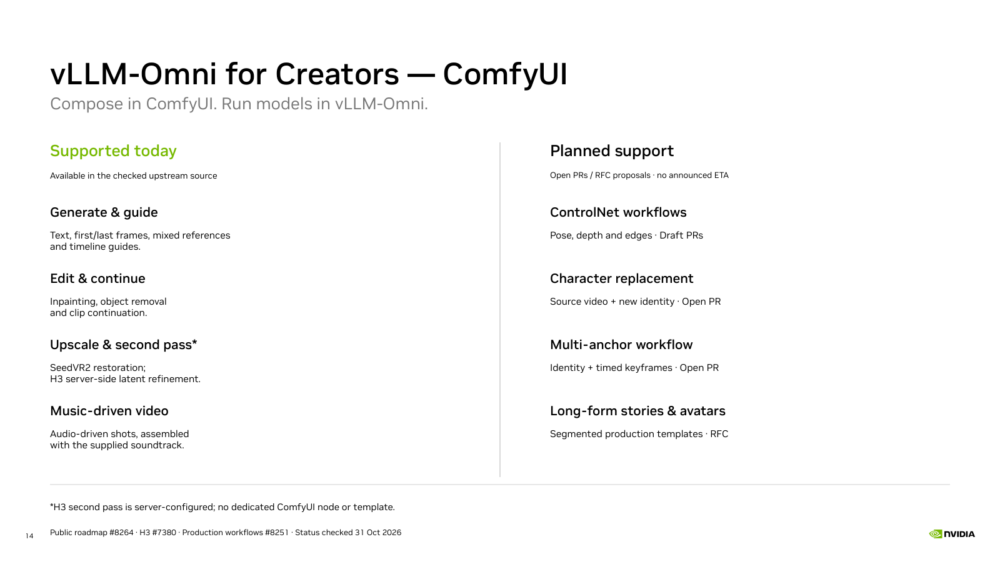
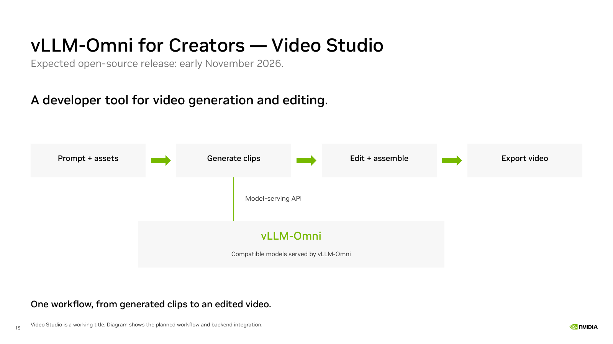
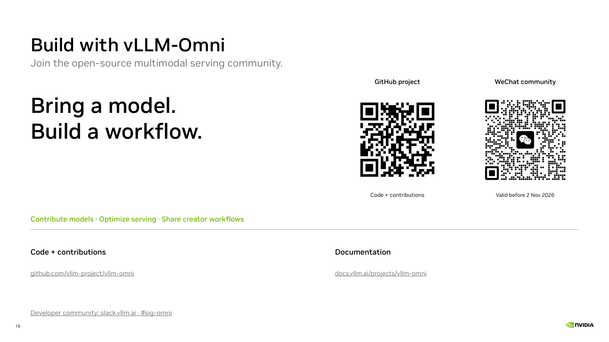

Present creator slides · Slides and downloads
Verified against upstream main · 31 October 2026 · 08177216

The official extension connects a ComfyUI workflow to a local or remote vLLM-Omni service. Generation runs on the service; the client composes the workflow and handles inputs and outputs. Image, video, speech, music and multimodal nodes exist, but the selected model and API determine which inputs and operations work. Pinned official README · Current integration documentation
The H3 all-in-one workflow covers text-driven generation, first/last-frame conditioning and mixed references. It does not include a prompt-assistance LLM. A separate music-video workflow constructs shots from slices of an existing track and assembles them with the original audio. H3 all-in-one guide · H3 music-video guide
This is a source review, not a new inference test. The screenshot is the official UI example and does not specify the benchmark settings used earlier in this talk. The statement is pinned to main, not a promise that every item is in every released package.
| Workflow | Support boundary | Evidence |
|---|---|---|
| Text, keyframes and mixed references | Existing ComfyUI All-in-One template | Official source |
| Timeline guides | Existing Add Guide node and template; base-H3 compatibility rules apply | Official source |
| Inpainting, removal, continuation and extension | Existing latent-mask editing template | Official source |
| Music-driven multi-shot video | Existing Music Video template; supplied track drives shots and final soundtrack | Official source |
| SeedVR2 upscale / restoration | Existing local upscale and remote restoration workflows; separate SeedVR2 model/service | Official source |
| H3 second-pass refinement | H3 backend capability via server defaults; no dedicated current ComfyUI node or template | Official source |
H3 second-pass refinement generates a base latent, optionally upscales it, then re-noises and resumes the tail of the denoising schedule. It is supported through H3 server configuration, with no dedicated second-pass node or example template in the checked ComfyUI extension. Request-mode serving is required, and learned latent upscaling needs its separate checkpoint. SeedVR2 restoration is a different model and workflow. These capabilities were checked in upstream source; this slide does not claim a new real-model validation. Current ComfyUI parameter UI · Pinned evidence and scope.
The public Q4 roadmap includes ComfyUI integration. The items below are open implementation work or RFC proposals, not committed delivery dates. Current code takes precedence over stale RFC checkboxes.
| Workflow | Status / scope | Evidence |
|---|---|---|
| ControlNet workflows | Draft PRs #7492 / #7507; not merged | Official source |
| Character replacement | Open PR #9194; dependencies and quality validation remain | Official source |
| Identity plus timed-keyframe template | Open PR #9420; underlying reference and timeline nodes already exist | Official source |
| Long-form stories and repeatable avatars | RFC #8251 proposals H3-01 / H3-02 / H3-05; no published delivery dates | Official source |
| Generation progress in ComfyUI | Open PR #7943; not merged | Official source |
Existing bounded continuation differs from the proposed long-form production graphs. Timeline-guide nodes already exist; the proposed multi-anchor template combines them with an identity reference.
Expected open-source release: early November 2026 · working title

The presenter plans to open-source a developer tool for end-to-end video generation and editing, using compatible models served by vLLM-Omni. “Video Studio” is a descriptive working title. The diagram illustrates the intended workflow; it does not represent a released product or a completed integration. The presenter expects an open-source release in early November 2026. This is a planned window; no exact release date, public repository or validated model matrix is being announced here.

Bring a model. Build a workflow. Join the open-source multimodal serving community.
GitHub project and contributions · Current documentation · Developer Slack — #sig-omni
Links and channel verified against the official project README on 31 October 2026. The closing page is newly designed and contains no historical event announcement. Its GitHub QR links directly to the official project. The WeChat QR comes from the current official README; the source image states that it is valid before 2 November 2026. QR decoding was checked, but live WeChat admission was not tested. Download official WeChat image with expiry notice · Download GitHub QR · QR source and scope.